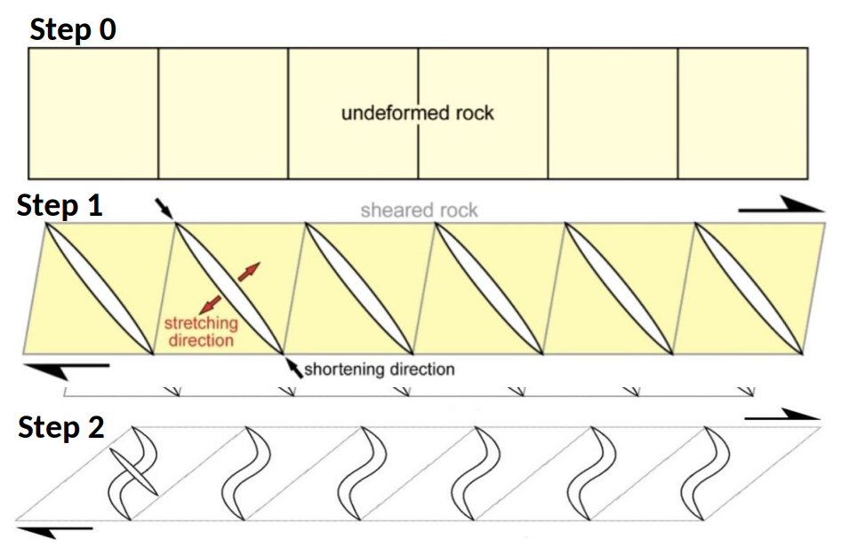
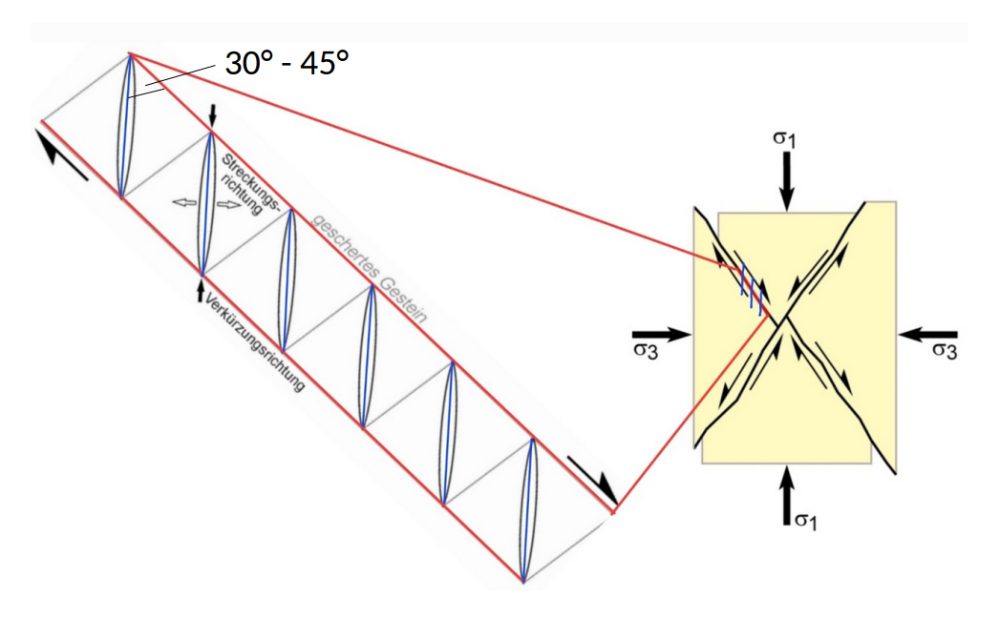
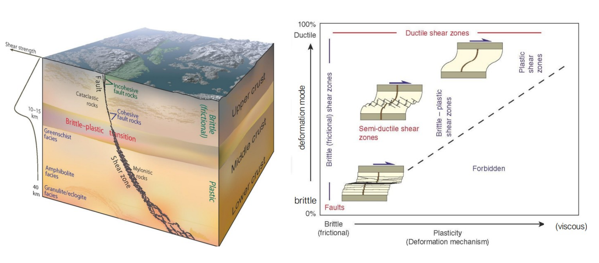

1. Fracturing
When shear stress on the rock becomes high enough, small tension cracks (tension gashes) open.They form perpendicular to the direction of greatest stretching (σ₃), which lies at about 45° to the shear zone boundary, so they are parallel to the direction of maximum compression (σ₁). Many of these cracks form next to each other, evenly spaced and slightly overlapping. This creates the enechelon pattern.
2. Vein filling
Fluids moving through the cracks deposit minerals such as quartz or calcite, so the cracks become veins. This often happens in several steps: the crack opens slightly, fills with minerals, and opens again.
3. Rotation
Under progressive shearing, the existing parts of the veins are rotated in the direction of shear. They end up at a lower angle to the shear zone boundary than when they first formed.
4. Tip growth
The directions of σ₁ and σ₃ remain unchanged during the deformation, with σ₃ staying at about 45° to the shear zone boundary, while the rock and the veins in it are rotated by the shear. The vein tips keep growing perpendicular to σ₃, so they follow the original orientation. The older center of the vein has already rotated to a lower angle. This difference in orientation between the rotated center and the newly grown tips gives the vein its sigmoidal shape.
Note: In reality, this is a continuous process, not four separate phases. Under continued shearing, the cracks keep growing at their tips, while they are continuously filled with vein material. Fracturing, filling, rotation, and tip growth therefore happen at the same time, and the four steps above are only a simplification to explain the individual processes.

Image Description
0. The rock is not yet deformed.
1. Under simple shear (here dextral), straight tension gashes open parallel to σ₁, at about 45° to the shear zone boundary.
2. As (dextral) simple shear continues, the existing gashes are rotated. The directions of σ₁ and σ₃ stay the same, so the tips keep growing parallel to σ₁. The rotated center and the newly grown tips together give the gashes their sigmoidal (here S-) shape.
The veins in our sample record an overall top-to-the-left (sinistral) shear sense, consistent with the geometry of the sigmoidal central part of the vein.
Because the tips preserve the original opening direction, they provide a reliable indication of the stress field at the time of fracture formation:
• σ₁ (maximum compressive stress) is parallel to the vein tips and about 30°-45° to the shear plane
• σ₃ (minimum principal stress) is perpendicular to the extensional opening direction. Add: Sigma 1 is about 30°-45° to the shear plane (red lines).

This combination of extensional fracturing (brittle) followed by continued simple shearing (ductile) is characteristic of rocks that undergo deformation under mixed brittle–ductile conditions in the crust at a depth of around 15 km.
